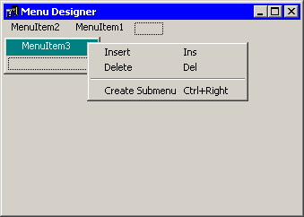

This is common editor for menus, context menus and tray menus.

When you first open the menu editor, you'll see an empty “virtual” item (it has a dot frame inside). This is the placeholder item, and just show the position where next item will be created. It will not generate any code and have no properties assigned in property editor. Right-click on it to bring up its context menu, where you can either pick “Insert (Ins)” to create new real menu item, or “Delete (Del)” to remove a selected one.
A newly created item can be converted into a submenu (it's like regular item, but can hold another items like a menu entry). Pick “Create Submenu (Ctrl+Right)” in the second section of context menu. Once there, do as for normal menu items.